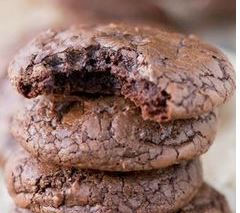
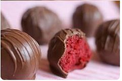
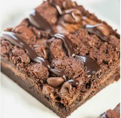

Recipes!
Want to test your baking skills? Try out some of our delicious recipes or use your own.
Our recipes below are great for beginners and are delicious! Try them for yourselves.

Ingredients
- 12 ounces bittersweet chocolate chips 60-70% cacao
- 1/2 cup butter
- 3 large eggs
- 1 cup granulated sugar
- 1/4 cup brown sugar
- 1 tablespoon vanilla extract
- 1/2 teaspoon baking powder
- 1/2 teaspoon salt
- 3/4 cup all-purpose flour
- 1/4 cup unsweetened cocoa powder not Dutch-processed
- 1 cup pecans chopped, optional
- 1/2 cup mini semisweet chocolate chips
Instructions
- Melt bittersweet chocolate chips and butter in a heavy saucepan over low heat, stirring constantly until melted and well-combined.
- Remove from heat and set aside.
- In the bowl of a stand mixer, beat the eggs, sugars, vanilla, baking powder, and salt on high speed 5 minutes, or until the batter is thick and creamy. This step is key, so make sure to beat the mixture for the full 5 minutes.
- Reduce the speed to low, and mix in the melted chocolate until well-combined.
- Stir in flour and cocoa powder just until combined.
- Add nuts, if using, and mini chocolate chips. Stir in to combine. The batter should be the consistency of a thick brownie batter at this point.
- Cover the batter, and chill for 30 minutes.
- Preheat oven to 350 F. Line two baking sheets with parchment paper.
- Using a 1.5 tablespoon cookie scoop, drop batter onto the prepared cookie sheets about 2 inches apart.
- Bake cookies 8-10 minutes. The cookie will look set at the edges but still be a little wet looking in the center. Don't overbake, or the cookies won't be crackly and fudgy.
- The shiny, crackly crust will develop as the cookies cool on the baking sheet.

Ingredients
- 1 box red velvet cake mix
- 1 can cream cheese frosting (16 oz.)
- 1½ packages candy melts (any color you want!)
- Cisco Shortening
- Wax paper
Instructions
- Bake cake per instructions on box for 13X9 cake
- After cake is cooked and cooled completely, crumble into large bowl.
- Mix thoroughly with 1 can cream cheese frosting. (It may be easier to use fingers to mix together but be warned it will get messy.)
- Roll mixture into quarter size balls and lay on cookie sheet. (Should make 45-50. You can get even more if you use a mini ice cream scooper, but I like to hand roll them.)
- Chill for several hours. (You can speed this up by putting in the freezer.)
- Melt candy melts in microwave per directions on package.
- Roll balls in chocolate and lay on wax paper until firm. (Use a spoon to dip and roll in chocolate and then tap off extra.)

Ingredients
- 1 pouch Pamela’s Products Chocolate Brownie Mix
- 1/2 cup canola or vegetable oil
- 1/3 cup water
- 1/2 cup Nutella or chocolate-hazelnut spread (chocolate-peanut butter may be substituted)
- 1/2 cup semi-sweet chocolate chips
- Hot fudge, for drizzling (homemade or store bought)
Instructions
- Preheat oven to 350F. Line an 8-inch square pan with aluminum foil leaving overhang and spray with cooking spray, or grease and flour the pan; set aside.
- To a large bowl, add the brownie mix, oil, water, and stir to combine; don’t overmix.
- Turn all but 1/2 cup batter out into the pan, smoothing the batter with a spatula as needed; reserve remaining batter.
- Evenly drizzle the Nutella over brownie batter in pan, lightly smoothing with a spatula as needed. Tip – Make drizzling and spreading the Nutella easier by microwaving it for 5 to 10 seconds.
- Evenly sprinkle the chocolate chips.
- Evenly dollop the remaining 1/2 cup brownie batter over the chocolate chips, lightly smoothing with a spatula as needed. Note that remaining batter won’t completely cover the surface and there will be ‘bare patches’ with exposed Nutella and chocolate chips.
- Bake for about 25 minutes, or until edges have set and center is no longer overly glossy or wet-looking. The toothpick test is very unreliable because you’ll likely hit chocolate chips, chocolate chunks, or Nutella, making the toothpick look wet even though brownies are done. I err on the side of under-done than over-done and 25 minutes in my oven allowed for very fudgy, gooey brownies. If you prefer more well-done brownies, bake a bit longer. The brownies firm up quite a bit as they cool.
- Allow brownies to cool in pan for at least 30 minutes before drizzling with hot fudge, slicing, and serving. Brownies will keep airtight at room temp for up to 1 week or in the freezer for up to 6 months.